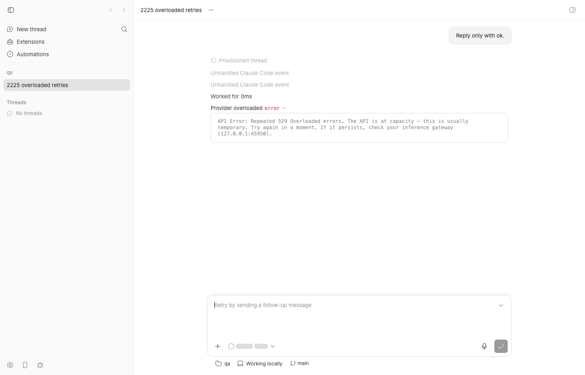
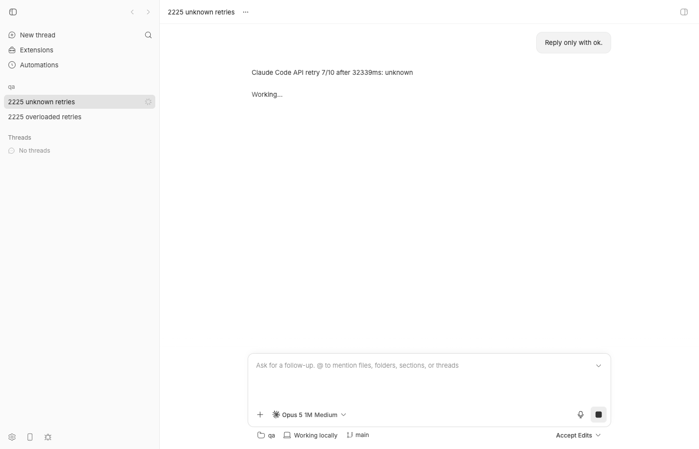
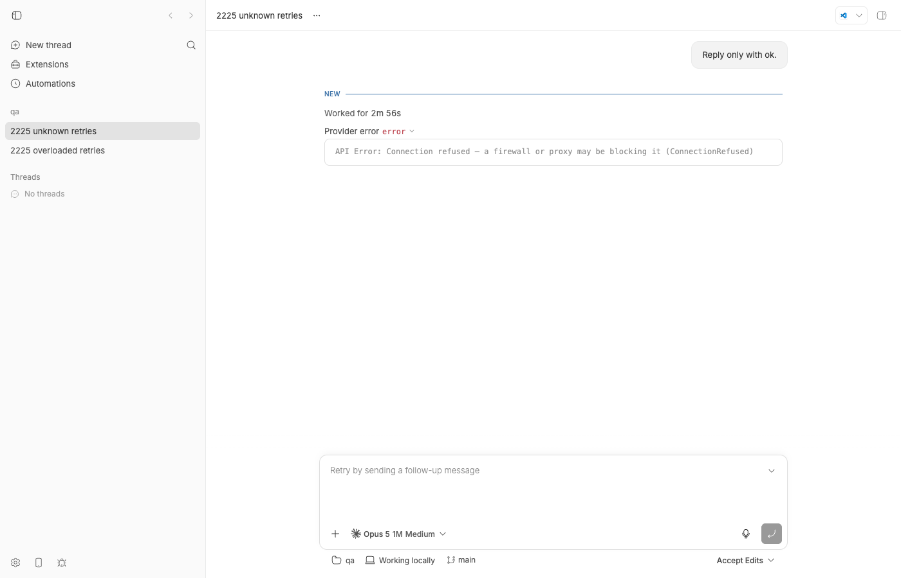
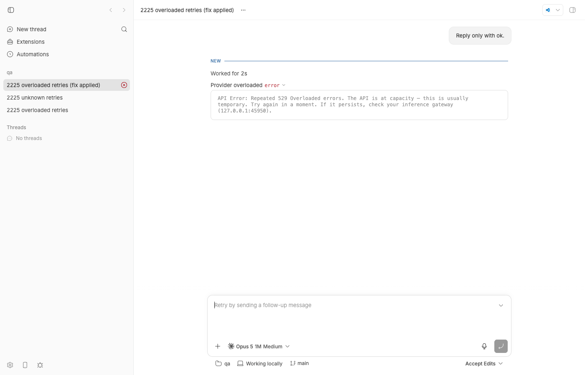

#2225 · Claude Code api_retry events remain unclassifiable when the SDK reports unknown/null status; turns can stall through blind retry storms
Verdict: REPRODUCED · Root-cause confidence: high
The issue describes a limitation plus a missing guardrail rather than a single crash, so "reproduced" here means: every observable the issue reports was reproduced live on a bb dev instance against 494f66526 (ten category: "unknown" retries, 2 min 56 s of stall, no escalation), and the cause was traced to a specific line in the Claude Code CLI binary. The investigation also found a second, bb-owned defect on the same code path that the issue does not mention: the CLI's error: "overloaded" value (HTTP 529) is rejected by bb's schema, so 529 retries are not even relayed as provider/error — they land in the thread as "Unhandled Claude Code event".
1. TL;DR
When the Claude Code CLI cannot reach the Anthropic API (connection refused, socket reset, timeout — anything without an HTTP response) it emits an api_retry stream line with error: "unknown" and error_status: null. bb forwards each one as a provider/error with willRetry: true and errorInfo.category: "unknown", because there is literally nothing else on the line to classify. The value comes from a tiny classifier inside the CLI binary (aen(e), shown below) that only inspects e.status; connection errors have no status, so they fall through to "unknown". The CLI then retries up to 10 times with exponential backoff (~3 minutes for a dead upstream), and bb has no turn-level guardrail: the runtime treats every willRetry: true error as "still working" and nothing counts consecutive retries. The user sees a "Working..." thread with a single rotating retry row for three minutes, then a terminal "Provider error" that is itself unclassified (no errorInfo at all, even though the CLI's prose says "ConnectionRefused"). Separately, bb's claudeAssistantMessageErrorSchema predates the SDK's "overloaded" value, so HTTP 529 retries fail schema parsing and are downgraded to thread-scoped provider/unhandled rows — a genuine bb bug with a two-line fix, verified here.
2. Claims vs findings
| Claim from the issue | Status | Evidence |
|---|---|---|
The CLI emits api_retry with error: "unknown", error_status: null on transient upstream failures | Verified | Captured verbatim from claude 2.1.241 against a closed port and against a socket-reset stand-in (cli-connection-refused-verify.ndjson, cli-socket-reset.ndjson). It is specifically connection-level failures; HTTP 500 arrives as server_error/500 and HTTP 529 as overloaded/529. |
bb relays each retry as provider/error classified category: "unknown", httpStatusCode: null | Verified | Thread thr_765fs987rc on the dev instance: events 6–15 are exactly {"category":"unknown","providerCode":"unknown","httpStatusCode":null} (thread-unknown-events.txt). |
The retry loop (up to max_retries = 10, exponential backoff) lives in the CLI; bb has no turn-level abort | Verified | Ten retries spaced 0.6 s → 38 s; turn ran 18:02:37 → 18:05:33 (2 min 56 s). No code in the server, runtime, or plugin counts retries; the only willRetry consumer in the runtime treats retrying errors as "not idle" (runtime.ts#L990). The old provider-turn watchdog has "no current producer" (thread-lifecycle.ts#L343). |
| "A single turn burned 9 retries over ~244 seconds before the user interrupted" | Verified (equivalent) | My run: 10 retries, 176 s until the CLI gave up on its own. The per-attempt delays match the reporter's shape (≈0.6, 1, 2, 4, 8, 17, 32–39 s). |
| "85 provider/error retry events across parent and child threads" in one session | Unverified | Count from the reporter's session; not reproducible here and not needed for the mechanism. Child threads go through the same translator, so the shape is plausible. |
0.39.0 already appends HTTP <status> and attaches structured errorInfo with an http-status fallback | Verified | buildClaudeApiRetryDetail; getProviderErrorCategoryFromClaudeCode. HTTP 500 retry relays as internal/server_error/500 (repro test, control case). |
| "When it reports unknown/null … there is nothing left for bb to classify" | Verified, with one caveat | True for the retry notices. But the terminal error after the last retry is also relayed without any errorInfo (event 19), even though the CLI's result text names the cause ("Connection refused … (ConnectionRefused)") and the synthetic assistant message carries error: "server_error". That terminal line is bb-classifiable and currently is not. |
| Suggestion 1: the CLI should surface transport context | Out of bb's control | The CLI's classifier is aen(e) in the binary (section 5). Only Anthropic can change what goes on the wire; bb can only consume what the CLI emits. |
| Suggestion 2: host-side guardrail after N consecutive retries | Design request, not a regression | Nothing implements it today (see above). Section 6 gives a concrete shape. |
(Not claimed in the issue) HTTP 529 retries are not relayed as provider/error at all | New defect found | claudeAssistantMessageErrorSchema lacks "overloaded", which the installed SDK 0.3.197 types declare and both claude 2.1.197 (bundled) and 2.1.241 (host) emit. Parse fails → provider/unhandled "Unhandled Claude Code event", no willRetry, no category. Thread thr_x5ruupvejk events 8–9; repro test fails on 494f66526. |
3. Environment
- bb
494f66526913557ab076e048218236f0a6610927(main, 2026-08-24), own worktree…/.claude/worktrees/wf_846839f8-f8a-42 - macOS 26.5.2 (Darwin 25.5, arm64), Node v22.23.1, pnpm workspace install with
--frozen-lockfile - Claude Code CLI on PATH:
2.1.241(~/.local/bin/claude; this is what the plugin spawns — resolveClaudeCodeExecutable prefers PATH). SDK@anthropic-ai/claude-agent-sdk@0.3.197, whose bundled binary is2.1.197— verified it emits the sameerror: "overloaded"for 529 (cli-2.1.197-bundled-529.ndjson). - Dev instance: App
http://localhost:16781, Serverhttp://localhost:24781, Host daemon127.0.0.1:32781, data dir~/.bb-dev/bb-machines-HOST.getbb.app-checkouts-bb-.claude-worktrees-wf_846839f8-f8a-42-8e9d9c155122(deleted after the run). Host daemon started withANTHROPIC_BASE_URL=http://127.0.0.1:45950and a dummyANTHROPIC_API_KEYso the CLI talks to a local stand-in instead of api.anthropic.com (no real usage spent). - Upstream stand-in:
fake-upstream.mjs(modes529,500,reset,hang); "connection refused" is just the stand-in not running.
4. Minimal reproduction
4a. Ten seconds, no bb: what the CLI puts on the wire
- Point the CLI at a closed port and cap retries so it finishes quickly:
mkdir -p /tmp/bb-2225-cwd && cd /tmp/bb-2225-cwd ANTHROPIC_BASE_URL=http://127.0.0.1:1 ANTHROPIC_API_KEY=sk-ant-api03-fake CLAUDE_CODE_MAX_RETRIES=2 \ claude -p "Reply only with ok." --output-format stream-json --verbose | grep -E 'api_retry|"type":"result"'
Actual output (claude 2.1.241, verbatim, trimmed to the relevant keys):{"type":"system","subtype":"api_retry","attempt":1,"max_retries":2,"retry_delay_ms":581,"error_status":null,"error":"unknown",...} {"type":"system","subtype":"api_retry","attempt":2,"max_retries":2,"retry_delay_ms":1142,"error_status":null,"error":"unknown",...} {"type":"result","subtype":"success","is_error":true,"api_error_status":null,"result":"API Error: Connection refused — a firewall or proxy may be blocking it (ConnectionRefused)",...}Note the retry lines sayunknown/nullwhile the final result line names the real cause. The same happens for a socket reset (cli-socket-reset.ndjson). - Same command with the stand-in answering HTTP 529 (
node fake-upstream.mjs 45951 529,ANTHROPIC_BASE_URL=http://127.0.0.1:45951):{"type":"system","subtype":"api_retry","attempt":1,"max_retries":2,"retry_delay_ms":611,"error_status":529,"error":"overloaded",...}"overloaded"is not in bb's enum (section 5b).
4b. Unit-level repro at the exact bb code path (fails on 494f66526)
Drop issue-2225-api-retry.test.ts into plugins/provider-claude-code/src/ and run it from that package directory: pnpm exec vitest run src/issue-2225-api-retry.test.ts. It feeds the captured SDK lines through the plugin's delta translator via the package's own createClaudeDeltaHarness.
RUN v4.1.1 /Users/USER/.bb-machines/HOST.getbb.app/checkouts/bb/.claude/worktrees/wf_846839f8-f8a-42/plugins/provider-claude-code
❯ bb-plugin-provider-claude-code src/issue-2225-api-retry.test.ts (4 tests | 1 failed) 10ms
× relays an HTTP 529 overloaded retry as a retrying overloaded error 4ms
⎯⎯⎯⎯⎯⎯⎯ Failed Tests 1 ⎯⎯⎯⎯⎯⎯⎯
FAIL bb-plugin-provider-claude-code src/issue-2225-api-retry.test.ts > #2225 Claude Code api_retry classification > relays an HTTP 529 overloaded retry as a retrying overloaded error
AssertionError: expected [ 'provider/unhandled' ] to not deeply equal [ 'provider/unhandled' ]
Compared values have no visual difference.
❯ src/issue-2225-api-retry.test.ts:125:43
123|
124| // What main actually emits for this line (the assertion below pri…
125| expect(events.map((e) => e.type)).not.toEqual(["provider/unhandled…
| ^
126| expect(providerErrors(events)).toEqual([
127| expect.objectContaining({
⎯⎯⎯⎯⎯⎯⎯⎯⎯⎯⎯⎯⎯⎯⎯⎯⎯⎯⎯⎯⎯⎯⎯⎯[1/1]⎯
Test Files 1 failed (1)
Tests 1 failed | 3 passed (4)
Start at 10:59:15
Duration 469ms (transform 271ms, setup 0ms, import 391ms, tests 10ms, environment 0ms)
Tests 1, 2 and 4 pass and document the issue's claims (connection-level retry → category unknown; ten consecutive retries → ten willRetry: true relays and no turn/completed; HTTP 500 is fully classified). Test 3 fails: the 529 line is translated to ["provider/unhandled"] instead of a retrying provider/error. With the two-line fix in section 6 applied, all four pass (vitest-fixed.txt; the existing delta-translation.test.ts suite still passes, 57/57, vitest-fixed-full.txt; plugin typecheck clean, typecheck-fixed.txt).
Repro test source
import { describe, expect, it } from "vitest";
import type { ThreadEvent } from "@bb/domain";
import { turnScope } from "@bb/domain";
import { TURN_1, createClaudeDeltaHarness } from "./delta-test-harness.js";
/**
* Repro for get-bb/bb#2225: Claude Code `api_retry` notices with
* `error: "unknown"` / `error_status: null`, plus what the same code path does
* with the `error: "overloaded"` value the current CLI emits for HTTP 529.
*
* Every SDK line below was captured verbatim from `claude` 2.1.241 run against
* a local stand-in upstream (see fake-upstream.mjs next to this report):
* - connection refused -> error "unknown", error_status null
* - HTTP 529 overloaded -> error "overloaded", error_status 529
* - HTTP 500 -> error "server_error", error_status 500
*/
const THREAD_ID = "thr_issue_2225";
function sdkMessage(message: Record<string, unknown>): Record<string, unknown> {
return {
jsonrpc: "2.0",
method: "sdk/message",
params: { threadId: THREAD_ID, message },
};
}
function providerErrors(events: readonly ThreadEvent[]) {
return events.filter((event) => event.type === "provider/error");
}
function apiRetry(args: {
attempt: number;
error: string;
error_status: number | null;
retry_delay_ms?: number;
}): Record<string, unknown> {
return {
type: "system",
subtype: "api_retry",
attempt: args.attempt,
max_retries: 10,
retry_delay_ms: args.retry_delay_ms ?? 574,
error_status: args.error_status,
error: args.error,
session_id: "d5606891-5aa7-42c2-9fbb-83b80619fa3d",
uuid: `5bf90f95-782c-499e-9593-7a3f495d98e${args.attempt}`,
};
}
describe("#2225 Claude Code api_retry classification", () => {
// Documents the limitation the issue reports: a connection-level failure
// (ECONNREFUSED, ECONNRESET, timeout) arrives as `unknown`/null and bb can
// only relay it as category "unknown" with no HTTP status.
it("relays a connection-level retry as an unclassifiable provider/error", () => {
const harness = createClaudeDeltaHarness();
const events = harness.translate(
sdkMessage(apiRetry({ attempt: 1, error: "unknown", error_status: null })),
{ threadId: THREAD_ID },
);
expect(providerErrors(events)).toEqual([
expect.objectContaining({
type: "provider/error",
scope: turnScope(TURN_1),
message: "Provider error",
detail: "Claude Code API retry 1/10 after 574ms: unknown",
willRetry: true,
errorInfo: {
category: "unknown",
providerCode: "unknown",
httpStatusCode: null,
},
}),
]);
});
// Documents the second half of the issue: nothing in bb escalates. Ten
// consecutive unknown retries in one turn are ten willRetry:true relays and
// no terminal error; the turn stays open until the CLI gives up or the user
// interrupts.
it("never escalates a run of consecutive unknown retries", () => {
const harness = createClaudeDeltaHarness();
const events: ThreadEvent[] = [];
for (let attempt = 1; attempt <= 10; attempt += 1) {
events.push(
...harness.translate(
sdkMessage(
apiRetry({ attempt, error: "unknown", error_status: null }),
),
{ threadId: THREAD_ID },
),
);
}
const errors = providerErrors(events);
expect(errors).toHaveLength(10);
expect(errors.every((e) => e.type === "provider/error" && e.willRetry)).toBe(
true,
);
expect(events.filter((e) => e.type === "turn/completed")).toHaveLength(0);
});
// FAILS on 494f66526. `claudeAssistantMessageErrorSchema` (schemas.ts:126)
// predates the SDK's `overloaded` value, so `claudeApiRetryMessageSchema`
// rejects the line, translateSystemMessage falls through to `[]`, and the
// envelope dispatch downgrades the notice to a thread-scoped
// `provider/unhandled` ("Unhandled Claude Code event"): no provider/error,
// no willRetry, no category, no turn opened.
it("relays an HTTP 529 overloaded retry as a retrying overloaded error", () => {
const harness = createClaudeDeltaHarness();
const events = harness.translate(
sdkMessage(
apiRetry({
attempt: 1,
error: "overloaded",
error_status: 529,
retry_delay_ms: 611,
}),
),
{ threadId: THREAD_ID },
);
// What main actually emits for this line (the assertion below prints it):
expect(events.map((e) => e.type)).not.toEqual(["provider/unhandled"]);
expect(providerErrors(events)).toEqual([
expect.objectContaining({
type: "provider/error",
detail: "Claude Code API retry 1/10 after 611ms: HTTP 529 overloaded",
willRetry: true,
errorInfo: {
category: "overloaded",
providerCode: "overloaded",
httpStatusCode: 529,
},
}),
]);
});
// Control: the HTTP 500 line the CLI emits today is fully classified.
it("classifies an HTTP 500 server_error retry as internal", () => {
const harness = createClaudeDeltaHarness();
const events = harness.translate(
sdkMessage(
apiRetry({
attempt: 1,
error: "server_error",
error_status: 500,
retry_delay_ms: 614,
}),
),
{ threadId: THREAD_ID },
);
expect(providerErrors(events)).toEqual([
expect.objectContaining({
detail: "Claude Code API retry 1/10 after 614ms: HTTP 500 server_error",
willRetry: true,
errorInfo: {
category: "internal",
providerCode: "server_error",
httpStatusCode: 500,
},
}),
]);
});
});4c. End to end on a bb dev instance (the stall the issue describes)
- Start the stand-in and a dev instance whose host daemon inherits the override (the plugin passes the daemon's env to the CLI):
node fake-upstream.mjs 45950 529 & export ANTHROPIC_BASE_URL=http://127.0.0.1:45950 ANTHROPIC_API_KEY=sk-ant-api03-fake-2225 scripts/bb-dev-app current # prints App/Server/Host daemon URLs and the data dir eval "$(scripts/bb-dev-app env)" pnpm bb:dev machine list --json # → host id curl -s -X POST $BB_SERVER_URL/api/v1/projects -H 'content-type: application/json' \ -d '{"name":"qa","source":{"type":"local_path","path":"/tmp/bb-2225-cwd","hostId":"<host id>"}}' - 529 case. Spawn a thread while the stand-in answers 529:
pnpm bb:dev thread spawn --project <proj> --provider claude-code --permission-mode accept-edits \ --title "2225 overloaded retries" --prompt "Reply only with ok." --json
Expected: two retryingprovider/errorevents withcategory: "overloaded",httpStatusCode: 529,willRetry: true, then the terminal error.
Actual (thread-overloaded-events.txt, thread-scoped, before the turn even opens):1|2026-08-24T18:01:13Z|client/turn/requested|thread|{"direction":"outbound","requestId":"creq_7u376us628","source":"spawn","initiator":"user","senderThreadId":null,"systemMessageKind":"unlabeled","systemMessageSubject":null,"input":[{"type":"text","text":"Reply only with ok.","mentions":[]}],"target":{"kind":"thread-start"},"request":{"method":"thread/start","params":{}},"execution":{"model":"claude-opus-5[1m]","serv … 2|2026-08-24T18:01:13Z|client/thread/start|thread|{"direction":"outbound","source":"spawn","initiator":"user","request":{"method":"thread/start","params":{}}} 7|2026-08-24T18:01:15Z|thread/identity|thread|{"providerThreadId":"a2cc127d-a9ad-47ba-b8d5-06f0caf457b5"} 8|2026-08-24T18:01:15Z|provider/unhandled|thread|{"providerThreadId":"a2cc127d-a9ad-47ba-b8d5-06f0caf457b5","providerId":"claude-code","rawType":"sdk/system","rawEvent":{"jsonrpc":"2.0","method":"sdk/message","params":{"message":{"type":"system","subtype":"api_retry","attempt":1,"max_retries":10,"retry_delay_ms":549,"error_status":529,"error":"overloaded","session_id":"a2cc127d-a9ad-47ba-b8d5-06f0caf457b5","uuid":"46 … 9|2026-08-24T18:01:16Z|provider/unhandled|thread|{"providerThreadId":"a2cc127d-a9ad-47ba-b8d5-06f0caf457b5","providerId":"claude-code","rawType":"sdk/system","rawEvent":{"jsonrpc":"2.0","method":"sdk/message","params":{"message":{"type":"system","subtype":"api_retry","attempt":2,"max_retries":10,"retry_delay_ms":1032,"error_status":529,"error":"overloaded","session_id":"a2cc127d-a9ad-47ba-b8d5-06f0caf457b5","uuid":"c … 10|2026-08-24T18:01:17Z|turn/started|turn|{"providerThreadId":"a2cc127d-a9ad-47ba-b8d5-06f0caf457b5"} 11|2026-08-24T18:01:17Z|turn/input/accepted|turn|{"providerThreadId":"a2cc127d-a9ad-47ba-b8d5-06f0caf457b5","clientRequestId":"creq_7u376us628"} 12|2026-08-24T18:01:17Z|item/completed|turn|{"providerThreadId":"a2cc127d-a9ad-47ba-b8d5-06f0caf457b5","item":{"type":"agentMessage","id":"da4f152953-i1","text":"API Error: Repeated 529 Overloaded errors. The API is at capacity — this is usually temporary. Try again in a moment. If it persists, check your inference gateway (127.0.0.1:45950)."}} 13|2026-08-24T18:01:17Z|thread/contextWindowUsage/updated|turn|{"providerThreadId":"a2cc127d-a9ad-47ba-b8d5-06f0caf457b5","contextWindowUsage":{"usedTokens":0,"modelContextWindow":null,"estimated":true}} 14|2026-08-24T18:01:17Z|thread/tokenUsage/updated|turn|{"providerThreadId":"a2cc127d-a9ad-47ba-b8d5-06f0caf457b5","tokenUsage":{"total":{"totalTokens":0,"inputTokens":0,"cachedInputTokens":0,"outputTokens":0,"reasoningOutputTokens":0},"last":{"totalTokens":0,"inputTokens":0,"cachedInputTokens":0,"outputTokens":0,"reasoningOutputTokens":0},"modelContextWindow":null}} 15|2026-08-24T18:01:17Z|provider/error|turn|{"providerThreadId":"a2cc127d-a9ad-47ba-b8d5-06f0caf457b5","message":"Provider error","detail":"API Error: Repeated 529 Overloaded errors. The API is at capacity — this is usually temporary. Try again in a moment. If it persists, check your inference gateway (127.0.0.1:45950).","errorInfo":{"category":"overloaded","providerCode":null,"httpStatusCode":529}} 16|2026-08-24T18:01:17Z|turn/completed|turn|{"providerThreadId":"a2cc127d-a9ad-47ba-b8d5-06f0caf457b5","status":"failed","providerCheckpointId":"c67b8727-243f-4e38-8269-44e5ea6a5c25"}
Base commit, 529 case. Look at the two grey "Unhandled Claude Code event" rows above "Worked for 0ms": those are the api_retry notices bb failed to parse. (The CLI itself gives up after 3 attempts on 529 — "Repeated 529 Overloaded errors" — so this case does not stall.) - Unknown case. Kill the stand-in (port now refuses connections) and spawn again:
kill %1 # fake-upstream pnpm bb:dev thread spawn --project <proj> --provider claude-code --permission-mode accept-edits \ --title "2225 unknown retries" --prompt "Reply only with ok." --json
Actual (thread-unknown-events.txt; turn-scoped; timestamps UTC):1|2026-08-24 18:02:35|client/turn/requested|thread|{"direction":"outbound","source":"spawn","initiator":"user","request":{"method":"thread/start","params":{}},"requestId":"creq_kdipke5j7p","senderThreadId":null,"input":[{"type":"text","text":"Reply only with ok.","mentions":[]}],"target":{"kind":"thread-start"},"execution":{"model":"claude-opus-5[1m]","permissionMode":"accept-edits","reasoningLevel":"medium","service … 2|2026-08-24 18:02:35|client/thread/start|thread|{"direction":"outbound","source":"spawn","initiator":"user","request":{"method":"thread/start","params":{}}} 3|2026-08-24 18:02:36|thread/identity|thread|{"providerThreadId":"f4c22603-2764-460b-b6d6-9e53421bce03"} 4|2026-08-24 18:02:37|turn/started|turn|{"providerThreadId":"f4c22603-2764-460b-b6d6-9e53421bce03"} 5|2026-08-24 18:02:37|turn/input/accepted|turn|{"providerThreadId":"f4c22603-2764-460b-b6d6-9e53421bce03","clientRequestId":"creq_kdipke5j7p"} 6|2026-08-24 18:02:37|provider/error|turn|{"providerThreadId":"f4c22603-2764-460b-b6d6-9e53421bce03","message":"Provider error","detail":"Claude Code API retry 1/10 after 585ms: unknown","willRetry":true,"errorInfo":{"category":"unknown","providerCode":"unknown","httpStatusCode":null}} 7|2026-08-24 18:02:38|provider/error|turn|{"providerThreadId":"f4c22603-2764-460b-b6d6-9e53421bce03","message":"Provider error","detail":"Claude Code API retry 2/10 after 1026ms: unknown","willRetry":true,"errorInfo":{"category":"unknown","providerCode":"unknown","httpStatusCode":null}} 8|2026-08-24 18:02:39|provider/error|turn|{"providerThreadId":"f4c22603-2764-460b-b6d6-9e53421bce03","message":"Provider error","detail":"Claude Code API retry 3/10 after 2210ms: unknown","willRetry":true,"errorInfo":{"category":"unknown","providerCode":"unknown","httpStatusCode":null}} 9|2026-08-24 18:02:41|provider/error|turn|{"providerThreadId":"f4c22603-2764-460b-b6d6-9e53421bce03","message":"Provider error","detail":"Claude Code API retry 4/10 after 4023ms: unknown","willRetry":true,"errorInfo":{"category":"unknown","providerCode":"unknown","httpStatusCode":null}} 10|2026-08-24 18:02:45|provider/error|turn|{"providerThreadId":"f4c22603-2764-460b-b6d6-9e53421bce03","message":"Provider error","detail":"Claude Code API retry 5/10 after 8183ms: unknown","willRetry":true,"errorInfo":{"category":"unknown","providerCode":"unknown","httpStatusCode":null}} 11|2026-08-24 18:02:53|provider/error|turn|{"providerThreadId":"f4c22603-2764-460b-b6d6-9e53421bce03","message":"Provider error","detail":"Claude Code API retry 6/10 after 16671ms: unknown","willRetry":true,"errorInfo":{"category":"unknown","providerCode":"unknown","httpStatusCode":null}} 12|2026-08-24 18:03:10|provider/error|turn|{"providerThreadId":"f4c22603-2764-460b-b6d6-9e53421bce03","message":"Provider error","detail":"Claude Code API retry 7/10 after 32339ms: unknown","willRetry":true,"errorInfo":{"category":"unknown","providerCode":"unknown","httpStatusCode":null}} 13|2026-08-24 18:03:42|provider/error|turn|{"providerThreadId":"f4c22603-2764-460b-b6d6-9e53421bce03","message":"Provider error","detail":"Claude Code API retry 8/10 after 33558ms: unknown","willRetry":true,"errorInfo":{"category":"unknown","providerCode":"unknown","httpStatusCode":null}} 14|2026-08-24 18:04:16|provider/error|turn|{"providerThreadId":"f4c22603-2764-460b-b6d6-9e53421bce03","message":"Provider error","detail":"Claude Code API retry 9/10 after 39090ms: unknown","willRetry":true,"errorInfo":{"category":"unknown","providerCode":"unknown","httpStatusCode":null}} 15|2026-08-24 18:04:55|provider/error|turn|{"providerThreadId":"f4c22603-2764-460b-b6d6-9e53421bce03","message":"Provider error","detail":"Claude Code API retry 10/10 after 37789ms: unknown","willRetry":true,"errorInfo":{"category":"unknown","providerCode":"unknown","httpStatusCode":null}} 16|2026-08-24 18:05:33|item/completed|turn|{"providerThreadId":"f4c22603-2764-460b-b6d6-9e53421bce03","item":{"type":"agentMessage","id":"da4f152953-i2","text":"API Error: Connection refused — a firewall or proxy may be blocking it (ConnectionRefused)"}} 17|2026-08-24 18:05:33|thread/contextWindowUsage/updated|turn|{"providerThreadId":"f4c22603-2764-460b-b6d6-9e53421bce03","contextWindowUsage":{"usedTokens":0,"modelContextWindow":null,"estimated":true}} 18|2026-08-24 18:05:33|thread/tokenUsage/updated|turn|{"providerThreadId":"f4c22603-2764-460b-b6d6-9e53421bce03","tokenUsage":{"total":{"totalTokens":0,"inputTokens":0,"cachedInputTokens":0,"outputTokens":0,"reasoningOutputTokens":0},"last":{"totalTokens":0,"inputTokens":0,"cachedInputTokens":0,"outputTokens":0,"reasoningOutputTokens":0},"modelContextWindow":null}} 19|2026-08-24 18:05:33|provider/error|turn|{"providerThreadId":"f4c22603-2764-460b-b6d6-9e53421bce03","message":"Provider error","detail":"API Error: Connection refused — a firewall or proxy may be blocking it (ConnectionRefused)"} 20|2026-08-24 18:05:33|turn/completed|turn|{"providerThreadId":"f4c22603-2764-460b-b6d6-9e53421bce03","status":"failed","providerCheckpointId":"eab045d6-bf7f-4d4f-ad82-034ca8b4bdb1"}Observe: (i) every retry iscategory: "unknown",httpStatusCode: null; (ii) the turn stays open for 2 min 56 s with nothing in bb able to end it; (iii) the terminalprovider/error(seq 19) has noerrorInfoat all although its text says "ConnectionRefused".
Base commit, 48 s into the unknown case. The only feedback is one rotating row, "Claude Code API retry 7/10 after 32339ms: unknown", plus "Working...". Nothing says what is failing; the user can only wait or press stop. 
Same thread after the CLI exhausted 10 retries. "Worked for 2m 56s" and a generic "Provider error" (no category pill, compare with the "Provider overloaded" label in the 529 screenshot) even though the text names the cause. - With the schema fix applied (section 6, step 1) and the instance restarted, the 529 case relays correctly; the unhandled rows are gone and the retries are classified (
thread-overloaded-fixed-events.txt):1|2026-08-24 18:07:38|client/turn/requested|thread|{"direction":"outbound","source":"spawn","initiator":"user","request":{"method":"thread/start","params":{}},"requestId":"creq_hy5p67793e","senderThreadId":null,"input":[{"type":"text","text":"Reply only with ok.","mentions":[]}],"target":{"kind":"thread-start"},"execution":{"model":"claude-opus-5[1m]","permissionMode":"accept-edits","reasoningLevel":"medium","service … 2|2026-08-24 18:07:38|client/thread/start|thread|{"direction":"outbound","source":"spawn","initiator":"user","request":{"method":"thread/start","params":{}}} 3|2026-08-24 18:07:44|thread/identity|thread|{"providerThreadId":"3bc60c99-3358-442e-a1db-39068a7e8d3c"} 4|2026-08-24 18:07:48|turn/started|turn|{"providerThreadId":"3bc60c99-3358-442e-a1db-39068a7e8d3c"} 5|2026-08-24 18:07:48|turn/input/accepted|turn|{"providerThreadId":"3bc60c99-3358-442e-a1db-39068a7e8d3c","clientRequestId":"creq_hy5p67793e"} 6|2026-08-24 18:07:48|provider/error|turn|{"providerThreadId":"3bc60c99-3358-442e-a1db-39068a7e8d3c","message":"Provider error","detail":"Claude Code API retry 1/10 after 582ms: HTTP 529 overloaded","willRetry":true,"errorInfo":{"category":"overloaded","providerCode":"overloaded","httpStatusCode":529}} 7|2026-08-24 18:07:48|provider/error|turn|{"providerThreadId":"3bc60c99-3358-442e-a1db-39068a7e8d3c","message":"Provider error","detail":"Claude Code API retry 2/10 after 1189ms: HTTP 529 overloaded","willRetry":true,"errorInfo":{"category":"overloaded","providerCode":"overloaded","httpStatusCode":529}} 8|2026-08-24 18:07:49|item/completed|turn|{"providerThreadId":"3bc60c99-3358-442e-a1db-39068a7e8d3c","item":{"type":"agentMessage","id":"da2620fe37-i1","text":"API Error: Repeated 529 Overloaded errors. The API is at capacity — this is usually temporary. Try again in a moment. If it persists, check your inference gateway (127.0.0.1:45950)."}} 9|2026-08-24 18:07:49|thread/contextWindowUsage/updated|turn|{"providerThreadId":"3bc60c99-3358-442e-a1db-39068a7e8d3c","contextWindowUsage":{"usedTokens":0,"modelContextWindow":null,"estimated":true}} 10|2026-08-24 18:07:49|thread/tokenUsage/updated|turn|{"providerThreadId":"3bc60c99-3358-442e-a1db-39068a7e8d3c","tokenUsage":{"total":{"totalTokens":0,"inputTokens":0,"cachedInputTokens":0,"outputTokens":0,"reasoningOutputTokens":0},"last":{"totalTokens":0,"inputTokens":0,"cachedInputTokens":0,"outputTokens":0,"reasoningOutputTokens":0},"modelContextWindow":null}} 11|2026-08-24 18:07:49|provider/error|turn|{"providerThreadId":"3bc60c99-3358-442e-a1db-39068a7e8d3c","message":"Provider error","detail":"API Error: Repeated 529 Overloaded errors. The API is at capacity — this is usually temporary. Try again in a moment. If it persists, check your inference gateway (127.0.0.1:45950).","errorInfo":{"category":"overloaded","providerCode":null,"httpStatusCode":529}} 12|2026-08-24 18:07:49|turn/completed|turn|{"providerThreadId":"3bc60c99-3358-442e-a1db-39068a7e8d3c","status":"failed","providerCheckpointId":"dc3f06e6-ad22-47a8-9594-a1ed8e44d611"}
Fixed build, 529 case: the two "Unhandled Claude Code event" rows are gone. (Retrying rows are collapsed by the timeline once the turn settles, which is why no retry row is visible here either.)
Repro files: 2225/repro/
5. Root cause
5a. Why the retries say "unknown" (CLI-owned)
The error field on api_retry is computed by this function inside the Claude Code binary (extracted with strings from ~/.local/share/claude/versions/2.1.241, claude-cli-2.1.241-api-retry-classifier-verify.txt):
function aen(e){
if(e.status===529||e.message?.includes('"type":"overloaded_error"'))return"overloaded";
if(e.status===429)return"rate_limit";
if(e.status===401||e.status===403)return"authentication_failed";
if(e.status!==void 0&&e.status>=408)return"server_error";
return"unknown"}
…
subtype:"api_retry",attempt:sr.retryAttempt,max_retries:sr.maxRetries,retry_delay_ms:sr.retryInMs,
error_status:sr.error.status??null,error:aen(sr.error)
It looks only at e.status. A connection refused / reset / timeout error from the fetch layer has no status, so error_status is null and error is "unknown". The error class name and message that the CLI clearly has (it prints "Connection refused … (ConnectionRefused)" in the final result) are not put on the retry line. The SDK's own type comment says as much: "error_status is null for connection errors (e.g. timeouts) that had no HTTP response" (sdk.d.ts excerpt). bb's translator is faithful to that input:
- delta-translation.ts#L733-L757 —
translateSystemMessageparses the line, buildserrorInfofromerror+error_status, and emits aprovider.errordelta withwillRetry: true(opening a turn if none is open). - error-info.ts#L65-L68 —
case "unknown"falls back to the HTTP-status classifier, and withnullstatus returns"unknown". There is no other signal on the line.
5b. Why 529 retries become "Unhandled Claude Code event" (bb-owned, not in the issue)
schemas.ts#L126-L136 enumerates the SDK's SDKAssistantMessageError values but omits "overloaded", which the pinned SDK (0.3.197, sdk.d.ts:2764) declares and which the CLI emits for HTTP 529 via aen above. The enum was written in #1640 against an older SDK; the repo's own fixture (__fixtures__/transcripts/foreground-agent-api-retry.ndjson) still shows the old shape error_status: 529, error: "server_error", which is why nothing caught the drift. Consequence chain:
- claudeApiRetryMessageSchema rejects the line (
errornot in enum). translateSystemMessagetries every other system-subtype schema, none match, and returns[](#L883).- The envelope dispatch turns an empty translation into
unhandledDeltas(...)(#L1386-L1394);describeRawEventdoes not listapi_retryas a known subtype (visibility.ts#L212-L241) so coverage is"unknown"and a thread-scopedprovider/unhandledis emitted. - The notice loses
willRetry, loses its category, does not open the turn, and renders as "Unhandled Claude Code event". The only reason the 529 turn still fails cleanly is that the CLI itself bails after three 529s; a 529 storm that the CLI kept retrying would be invisible to bb as retries.
5c. Why nothing stops the storm (bb-owned, design gap)
The retry loop and its budget (max_retries, CLAUDE_CODE_MAX_RETRIES) live in the CLI. On the bb side the only consumer of willRetry is the runtime's idle tracking — a retrying error just means "not idle" (runtime.ts#L990-L993). No server, runtime, or plugin code counts consecutive retries or elapsed retry time per turn (grep for any such counter comes back empty), and the provider-turn watchdog that once existed has "no current producer" (thread-lifecycle.ts#L343; removed as dead code in #2140).
5d. Deeper issue: the terminal error is also unclassified
After the last retry the CLI emits a synthetic assistant message (model: "<synthetic>", top-level error: "server_error") and a result with subtype: "success", is_error: true, api_error_status: null. bb builds the terminal errorInfo only from api_error_status and the result subtype (delta-translation.ts#L1235-L1256); with null and "success" that yields null, so the terminal provider/error ships with no errorInfo (seq 19 above) and the UI shows a bare "Provider error". The assistant-level error code is parsed by the schema but never read by the translator. This is the one place in the unknown case where bb does have a signal and drops it.
6. Proposed fix (first principles)
- Accept
"overloaded"(confident; verified). Add it toclaudeAssistantMessageErrorSchemaand map it to"overloaded"ingetProviderErrorCategoryFromClaudeCode. Diff:fix-overloaded.diff. Risk: none beyond the enum widening; the http-status branch already returns"overloaded"for 529, so the switch arm only matters when the CLI sendsoverloadedwithout a status (theoverloaded_error-in-message path ofaen). Also refresh the stale 529 fixture so the conformance suite exercises the current CLI shape. To stop this class of drift, derive the zod enum from the SDK'sSDKAssistantMessageErrorunion with a compile-timesatisfiescheck so a future SDK bump fails typecheck instead of silently degrading toprovider/unhandled. - Classify the terminal error (confident). In
translateResultMessage, when the result is a failure with noapi_error_status, fall back to the most recentapi_retrycode/status recorded in the dialect state for the open segment (the Codex provider already does exactly this correlation —resolveCodexErrorInfoinplugins/provider-codex/src/delta-translation.ts), and additionally read the synthetic assistant message's top-levelerrorcode. At minimum the terminal error would becomeproviderCode: "server_error"; with a small prose map ("ConnectionRefused", "ECONNRESET", "timed out") it can become a"network"-style category. The plugin already ignores that assistanterrorfield, so the change is local. - Turn-level guardrail (design; not confident about the exact policy, so the shape only). Per AGENTS.md the server owns product policy, so the count belongs in the server/runtime, not the daemon: track consecutive
provider/errorwithwillRetry: trueper turn (reset on any item/turn progress) and, past a threshold (e.g. 5 attempts or 60 s of cumulativeretry_delay_ms), either interrupt the turn through the existing stop path and emit a terminalprovider/errorwithwillRetry: falseand the last knownerrorInfo, or at least emit a distinct "upstream unreachable" system event so the UI can show more than "Working...". Cheaper alternative with the same user-visible effect: have the daemon launch the CLI with a lowerCLAUDE_CODE_MAX_RETRIES(the CLI honours the env var; verified above), which bounds the stall at the source but loses the CLI's own backoff for genuinely transient blips. What could go wrong: aborting too eagerly during real upstream incidents turns a self-healing 30 s blip into a failed turn; the threshold should be conservative and the abort should preserve the provider checkpoint so a follow-up message resumes cleanly. - Upstream ask. The retry-line classifier in the CLI should include the fetch error name (
e.name/e.cause?.code) whenstatusis absent. Until then items 1–3 are the whole of what bb can do.
7. PR review
No open PRs are linked to this issue.
8. Related issues
- #1840 (closed) — Codex terminal stream disconnects misclassified as generic provider errors. Same pattern as 5d: the terminal event loses the structured category that the retry events carried; the fix (PR #1563) correlates retry and terminal errors per turn and is the template for item 2 above.
- #1914 — a rate-limited workflow call reports only "Workflow worker failed"; another case of a classified upstream failure degrading to a generic error by the time it reaches the user.
- #2097 (closed) — Claude threads reused a stale CLI process after a terminal authentication failure; touches the same terminal-error path in
translateResultMessage. - #2140 — removed the dead provider-turn watchdog producer; relevant to where a guardrail would live.
9. Appendix
Files
issue-2225-api-retry.test.ts— repro test;vitest-main.txt(base, 1 failed),vitest-fixed.txt(fix applied, 4 passed),vitest-fixed-full.txt,typecheck-fixed.txtfix-overloaded.diff— the two-line schema/category fixfake-upstream.mjs,run-with-timeout.mjs,wait-server.sh— helpers- CLI captures (claude 2.1.241 unless noted):
connection refused,connection refused (earlier run),socket reset,HTTP 500,HTTP 529,HTTP 529 with the SDK-bundled 2.1.197 binary - bb thread event dumps:
unknown,529 (base),529 (fix applied), raw CLI JSONthread-overloaded-log.clean.json; spawn responsesunknown,529,529 fixed;project-create.json - Binary evidence:
CLI classifier strings,SDK type excerpt - Stand-in logs:
45950 (base run),45950 (fixed run),45951 (bundled CLI) - Instance logs:
install.log,build.log,dev-app-start.log,dev-app-restart-fixed.log,dev-app-stop.log
Notes and caveats
- The first attempt at this report ran the same matrix in worktree
wf_846839f8-f8a-35(ports 17426/25426/33426); its CLI captures (cli-*.ndjsonwithout the-verifysuffix) are kept and agree with this run. - The repo's recorded-conformance suite for the Claude plugin had one pre-existing failure on the base commit unrelated to this change (
recorded/forkreplays no events;vitest-conformance-main.txtfrom the first attempt). It was not re-run here. - The plugin typecheck with the fix reported a turbo cache hit because the first attempt had already typechecked the identical diff; the cache key is content-hashed, so the result is valid.
origin/mainat the time of writing (21cb6b68b) has no commits after494f66526touchingplugins/provider-claude-code,packages/agent-runtime, or the thread services, so nothing here is already fixed.- Not reproduced with a real api.anthropic.com outage (obviously); the stand-in exercises the identical CLI code path (the
aenclassifier sees the same error objects the fetch layer produces for real connection failures).
Commands run (abridged, in order)
git checkout --detach 494f66526
pnpm install --frozen-lockfile --prefer-offline
pnpm exec turbo run build
claude --version # 2.1.241
node_modules/.pnpm/@anthropic-ai+claude-agent-sdk-darwin-arm64@0.3.197/.../claude --version # 2.1.197
cd /tmp/bb-2225-cwd && ANTHROPIC_BASE_URL=http://127.0.0.1:1 ANTHROPIC_API_KEY=sk-ant-api03-fake CLAUDE_CODE_MAX_RETRIES=2 \
claude -p "Reply only with ok." --output-format stream-json --verbose > cli-connection-refused-verify.ndjson
cp issue-2225-api-retry.test.ts plugins/provider-claude-code/src/ && (cd plugins/provider-claude-code && pnpm exec vitest run src/issue-2225-api-retry.test.ts) # 1 failed
node fake-upstream.mjs 45950 529 &
ANTHROPIC_BASE_URL=http://127.0.0.1:45950 ANTHROPIC_API_KEY=... scripts/bb-dev-app current
curl -s -X POST http://localhost:24781/api/v1/projects ... /tmp/bb-2225-cwd host_kjgnc46z7w # proj_65abtuakx5
pnpm bb:dev thread spawn --project proj_65abtuakx5 --provider claude-code ... "2225 overloaded retries" # thr_x5ruupvejk
pnpm bb:dev thread log thr_x5ruupvejk --json
kill <fake-upstream>; pnpm bb:dev thread spawn ... "2225 unknown retries" # thr_765fs987rc
sqlite3 <data dir>/bb.db "select sequence, datetime(created_at/1000,'unixepoch'), type, scope_kind, data from events where thread_id='thr_765fs987rc' order by sequence"
doobie ... page.screenshot (live / final)
git apply fix-overloaded.diff; pnpm exec vitest run ...; pnpm exec turbo run typecheck --filter=bb-plugin-provider-claude-code
node fake-upstream.mjs 45950 529 &; scripts/bb-dev-app current; pnpm bb:dev thread spawn ... "(fix applied)" # thr_zkfgmgkmzd
strings -n 8 ~/.local/share/claude/versions/2.1.241 | grep -o 'function [A-Za-z0-9_$]*(e){if(e.status===529...'
pnpm dev:stop; rm -rf <data dir> /tmp/bb-2225-cwd; lsof -nP -iTCP -sTCP:LISTEN | grep -E '16781|24781|32781|45950|45951'